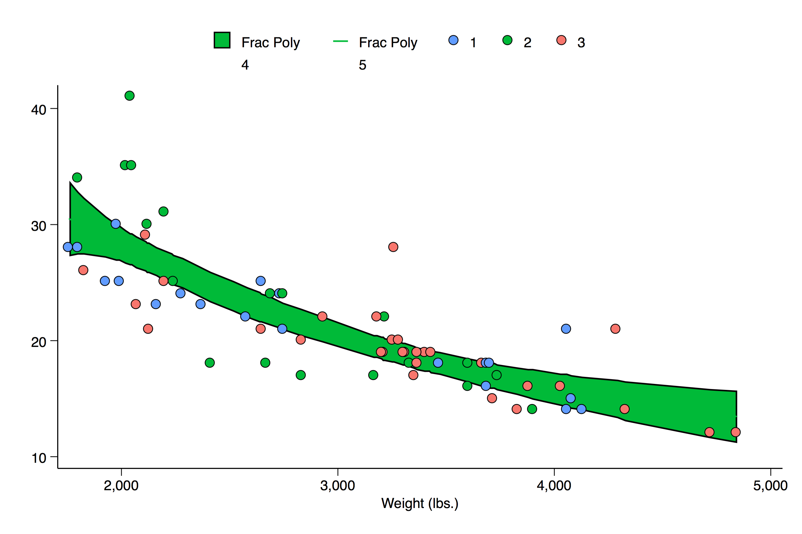
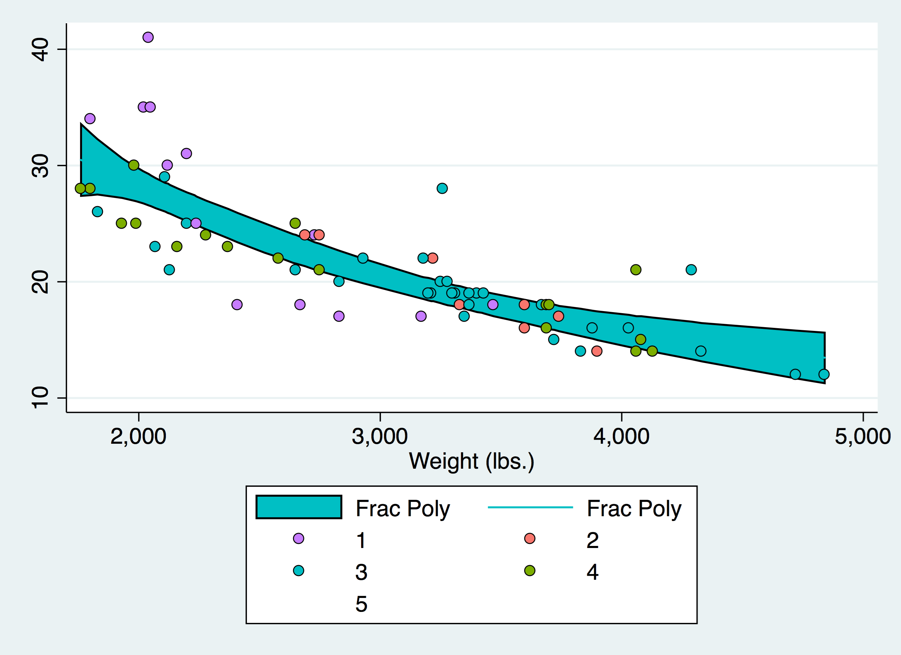
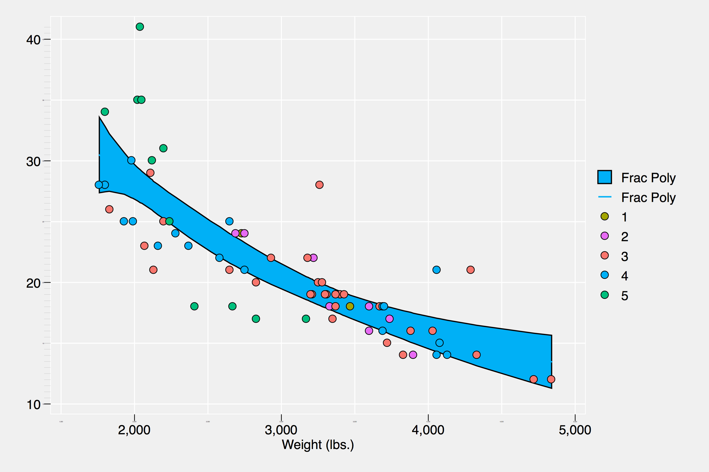
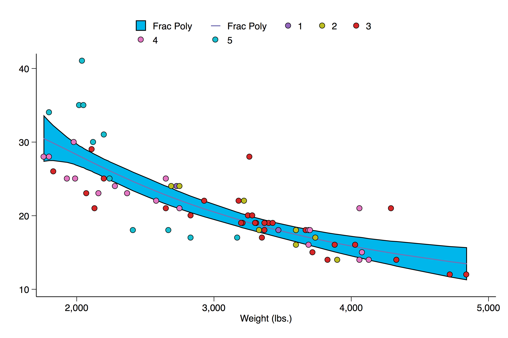
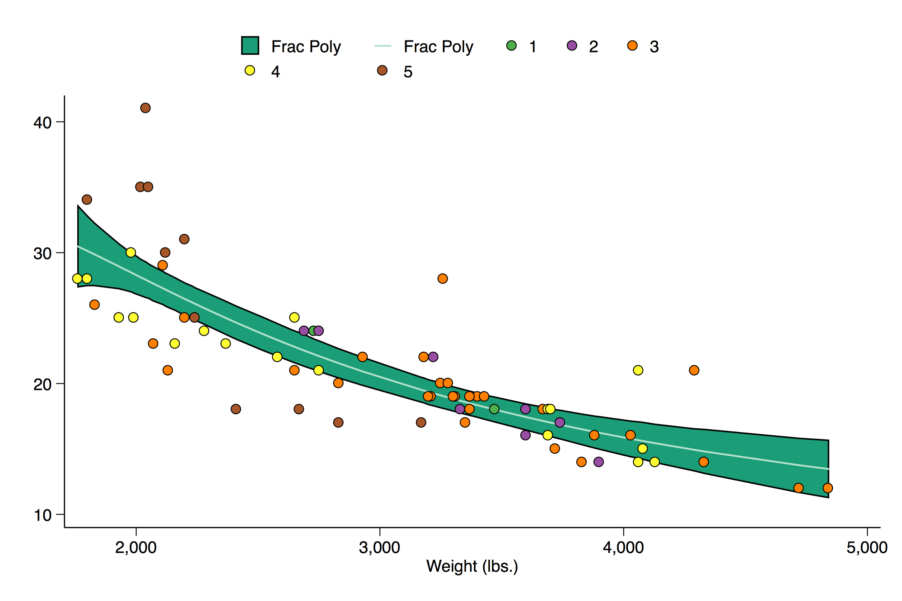

brewscheme
Command to generate customized scheme files.
brewscheme – A program for easy generation of customized graph scheme files.
Syntax
| brewscheme , schemename(scheme name) | [ replace | ||
| allstyle(string) | allcolors(real 3) | allsaturation(real 100) | |
| somestyle(string) | somecolors(real 3) | somesaturation(real 100) | |
| barstyle(string) | barcolors(real 3) | barsaturation(real 100) | |
| scatstyle(string) | scatcolors(real 3) | scatsaturation(real 100) | |
| areastyle(string) | areacolors(real 3) | areasaturation(real 100) | |
| linestyle(string) | linecolors(real 3) | linesaturation(real 100) | |
| boxstyle(string) | boxcolors(real 3) | boxsaturation(real 100) | |
| dotstyle(string) | dotcolors(real 3) | dotsaturation(real 100) | |
| piestyle(string) | piecolors(real 3) | piesaturation(real 100) | |
| sunstyle(string) | suncolors(real 4) | sunsaturation(real 100) | |
| histstyle(string) | histcolors(real 3) | histsaturation(real 100) | |
| cistyle(string) | cicolors(real 3) | cisaturation(real 100) | |
| matstyle(string) | matcolors(real 3) | matsaturation(real 100) | |
| reflstyle(string) | reflcolors(real 3) | reflsaturation(real 100) | |
| refmstyle(string) | refmcolors(real 3) | refmsaturation(real 100) | |
| constart(string) | conend(string) | consaturation(real 100) | |
| themefile(string) | symbols(string) | ] | |
Description
brewscheme is a command to help Stata users developing graph schemes using research-based color palettes. Unlike other uses of the color palettes developed by Brewer (see References below), this program allows users to specify the number of colors from any of the 59 color palettes they would like to use and allows users to mix/combine different palettes for the various graph types available in Stata. Since starting the program, it has grown to include color resources from: d3.scale.category10(), d3.scale.category20(), d3.scale.category20b(), and d3.scale.category20c() from the D3js library; default colors used by ggplot2 for 2-24 colors; semantic color mappings studied by Lin, Fortuna, Kulkarni, Stone, & Heer (2013); and additional colors are in the process of being added.
Available Palettes
To view information about the available palettes as well as to view previews of each of the palettes, please see the brewviewer documentation.
Options
schemename is used to name the scheme that will be created by the program. Unless absolutely necessary, I highly recommend avoiding embedded spaces in these file names.
replace if the source dataset containing the color palettes is not found or the user specifies the refresh option, colorbrewscheme will rebuild the source data set to generate the scheme files.
symbols is an optional argument used to define the type of marks to use - and the order in which to use them - for graphs that include individual points. For a quick list of available options use graph query symbolstyle.
Single Color Palettes and Default Color Palettes
allstyle The lower-cased name of a color palette to be used for all graph types.
allcolors The maximum number of colors to use from the palette specifed by the allstyle option.
allsaturation Used to set the color intensity for all graph types.
somestyle The lower-cased name of a color palette to be used for graph types without specified color palettes.
somecolors The maximum number of colors to use from the palette specifed by the somestyle option.
somesaturation Used to set the color intensity for graph types without specified color palettes.
themefile Is an optional argument used to supply brewscheme with a theme file created by brewtheme. Theme files are used to control global aesthetic properties (e.g., background/foreground colors, text sizes, symbol sizes, etc…) that are typically independent of the data being visualized. See brewtheme for additional information.
Individual Graph Types
Bar Graphs
barstyle The lower-cased name of a color palette that will be used to define colors for bar graphs.
barcolors The maximum number of colors to use from the palette specifed by the barstyle option.
barsaturation Used to set the color intensity for bar graphs.
Scatterplots
scatstyle The lower-cased name of a color palette that will be used for scatter plots.
scatcolors The maximum number of colors to use from the palette specifed by the scatstyle option.
scatsaturation Used to set the color intensity for scatterplots.
Area Graphs
areastyle The lower-cased name of a color palette to be used for area graphs
areacolors The maximum number of colors to use from the palette specifed by the areastyle option.
areasaturation Used to set the color intensity for area graphs.
Line Graphs
linestyle The lower-cased name of a color palette to be used for line graphs.
linecolors The maximum number of colors to use from the palette specifed by the linestyle option.
linesaturation Used to set the color intensity for line graphs.
Box Plots
boxstyle The lower-cased name of a color palette to be used for box plots.
boxcolors The maximum number of colors to use from the palette specifed by the allstyle option.
boxsaturation Used to set the color intensity for box plots.
Dot Plots
dotstyle The lower-cased name of a color palette to be used for dot plots.
dotcolors The maximum number of colors to use from the palette specifed by the dotstyle option.
dotsaturation Used to set the color intensity for dot plots.
Pie Graphs
piestyle The lower-cased name of a color palette to be used for pie graphs.
piecolors The maximum number of colors to use from the palette specifed by the piestyle option.
piesaturation Used to set the color intensity for pie graphs.
Sunflower Plots
sunstyle The lower-cased name of a color palette to be used for sunflower plots. Note, only the first four colors will be used.
suncolors The maximum number of colors to use from the palette specifed by the sunstyle option.
sunsaturation Used to set the color intensity for sunflower plots.
Histograms
histstyle The lower-cased name of a color palette to be used for histograms.
histcolors The maximum number of colors to use from the palette specifed by the histstyle option.
histsaturation Used to set the color intensity for histograms.
Confidence Intervals
cistyle The lower-cased name of a color palette to be used for graphs containing confidence intervals.
cicolors The maximum number of colors to use from the palette specifed by the cistyle option.
cisaturation Used to set the color intensity for confidence intervals.
Scatterplot Matrices
matstyle The lower-cased name of a color palette to be used for scatter plot matrices.
matcolors The maximum number of colors to use from the palette specifed by the matstyle option.
matsaturation Used to set the color intensity for scatterplot matrices.
Reference Lines
reflstyle The lower-cased name of a color palette to be used for reference lines.
reflcolors The maximum number of colors to use from the palette specifed by the reflstyle option.
reflsaturation Used to set the color intensity for reference lines.
Reference Markers
refmstyle The lower-cased name of a color palette to use for reference markers.
refmcolors The maximum number of colors to use from the palette specifed by the refmstyle option.
refmsaturation Used to set the color intensity for reference markers.
Contour Plots
constart Defines the starting color to be used for contour plots using standard colorstyles from Stata.
conend Defines the ending color to be used for contour plots using standard colorstyles from Stata.
Examples
Ex 1.
Generate a graph scheme using the set1 color brewer palette for all graphs. Use the first five colors of the palette and set the color intensity to 80 for each of the graphs.
brewscheme, scheme(set1) allst(set1) allc(5) allsat(80)
Ex 2.
Generate a graph scheme using the set1 color brewer palette for scatterplots, pastel1 for bar graphs, and brown to blue-green for all other graph types. Use the default values of colors and intensity for each.
brewscheme, scheme(mixed1) scatst(set1) barst(pastel1) somest(brbg)
Ex 3.
Uses a combination of D3js palettes, combined with ggplot2 default palettes and themefile.
// Shows combination of D3js color palettes
brewscheme, scheme(mixed2) scatst(category10) scatc(5) barst(category20) ///
barc(15) boxsty(category20b) boxc(13) somesty(ggplot2) somec(7) themef(ggtheme)
Ex 4.
Distinct Color Palette for Each Graph Type.
// Create a graph scheme with a distinct color palette for each graph type
brewscheme, scheme(myriadColorPalettes) barst(paired) barc(12) dotst(prgn) ///
dotc(7) scatstyle(set1) scatc(7) linest(pastel2) linec(5) boxstyle(accent) ///
boxc(7) areast(dark2) areac(6) piest(mdepoint) sunst(greys) ///
histst(veggiese) cist(activitiesa) matst(spectral) reflst(purd) ///
refmst(set3) const(ylgn) cone(puor)
Note, this program only creates the scheme file. To achieve the intended effect, you must use the scheme file in your subsequent graph commands:
sysuse auto.dta, clear
gr box mpg, over(rep78) scheme(mixed1)
Ex 5.
Create a mono color scheme with three colors; this will cause all layers beyond the third to not be drawn (e.g., there won’t be colors defined for Stata to use to assign colors to points/lines, etc…).
brewscheme, scheme(onecolorex1) allsty(ggplot2)
Graph created with the scheme defined above. Code for graph production is available in Example 11. 
Ex 6.
Use the ggplot2 color palette with s2color theme settings; this uses 4 colors to help highlight how these cases are handled by Stata
brewscheme, scheme(onecolorex2) allsty(ggplot2) allc(4) themef(s2theme)
Graph created with the scheme defined above. Code for graph production is available in Example 11. 
Ex 7.
Now five colors from same palette using the ggplot2 inspired theme
brewscheme, scheme(ggplot2ex1) allsty(ggplot2) allc(5) themef(ggtheme)
Graph created with the scheme defined above. Code for graph production is available in Example 11. 
Ex 8.
An Example showing the use of the some parameters
brewscheme, scheme(somecolorex1) somest(ggplot2) somec(7) linest(dark2) ///
linec(3) cist(pastel2) cic(6) scatsty(category10) scatc(10)
Graph created with the scheme defined above. Code for graph production is available in Example 11. 
Ex 9.
An example showing a different color palette/number of colors for each graph type
brewscheme, scheme(manycolorex1) barst(paired) barc(12) dotst(prgn) dotc(7) ///
scatstyle(set1) scatc(8) linest(pastel2) linec(7) boxstyle(accent) boxc(4) ///
areast(dark2) areac(5) piest(mdepoint) sunst(greys) histst(veggiese) ///
cist(activitiesa) matst(spectral) reflst(purd) refmst(set3) const(ylgn) ///
cone(puor)
Graph created with the scheme defined above. Code for graph production is available in Example 11. 
Ex 10.
Using different numbers of colors from the same scheme to highlight differences and showing the use of the symbols parameter
brewscheme, scheme(ggplot2ex2) const(orange) cone(blue) consat(20) ///
scatst(ggplot2) scatc(5) piest(ggplot2) piec(6) barst(ggplot2) barc(2) ///
linest(ggplot2) linec(2) areast(ggplot2) areac(5) somest(ggplot2) somec(15) ///
cist(ggplot2) cic(3) themef(ggtheme) symbols(diamond triangle square)
Graph created with the scheme defined above. Code for graph production is available in Example 11.

Ex 11.
Show output of the same graph with different schemes created by brewscheme and brewtheme.
// Load the auto.dta dataset
sysuse auto.dta, clear
// Loop over the schemes
foreach scheme in onecolorex1 onecolorex2 ggplot2ex1 somecolorex1 ///
manycolorex1 ggplot2ex2 {
// Create the same graph with each of the different schemes
tw fpfitci mpg weight || ///
scatter mpg weight if rep78 == 1 || ///
scatter mpg weight if rep78 == 2 || ///
scatter mpg weight if rep78 == 3 || ///
scatter mpg weight if rep78 == 4 || ///
scatter mpg weight if rep78 == 5, scheme(`scheme') ///
legend(order(1 "Frac Poly" 2 "Frac Poly" 3 "1" 4 "2" ///
5 "3" 6 "4" 7 "5")) name(`scheme', replace)
} // End of Loop over scheme files
## References Bostock, M., Ogievetsky, V., & Heer, J. (2011). D3: data driven documents. IEEE Transactions on Visualization & Computer Graphics. 17(12) pp 2301 - 2309. Retrieved from http://vis.stanford.edu/papers/d3
License
Please view section 4 of the ColorBrewer copyright notice for additional information pertaining to the licensing and redistribution of ColorBrew intellectual property.
Acknowledgements
Development of this program began while I was a Strategic Data Fellow at the Mississippi Department of Education.